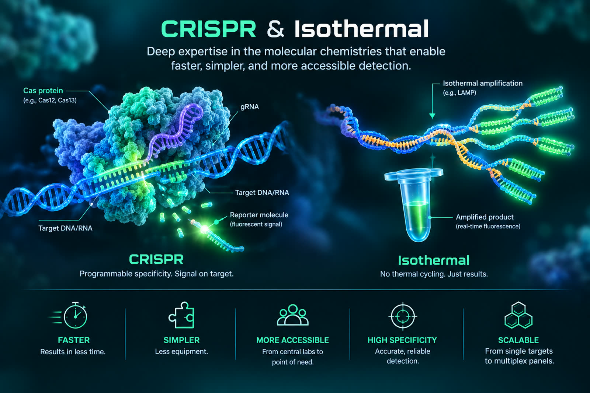

Specialization
CRISPR & Isothermal
Deep expertise in the molecular chemistries that enable faster, simpler, and more accessible detection.
We build the molecular detection technologies behind next-generation diagnostics—from CRISPR and isothermal amplification to multiplex real-time PCR—and turn them into validated, market-ready products alongside diagnostic innovators.
Real-time PCR panel validated and transferred to a commercial partner
Per-reaction limit of detection demonstrated in multiplex
Typical timeline for an analytical validation program
Foreground IP generated through your program remains yours.
Amplera develops molecular detection technologies for next-generation diagnostics—from CRISPR and isothermal amplification to multiplex real-time PCR and computational assay design.
We bring these technologies into partner programs, aligned to your timeline, documentation, and product goals.
You are not buying a set of experimental steps. You are building on deep molecular expertise.
Our scientist-led team is supported by advisors across CRISPR, bioinformatics, regulatory strategy, and clinical validation, with one named scientific lead accountable for every program.

Deep expertise in the molecular chemistries that enable faster, simpler, and more accessible detection.
Guiding your program from concept and assay development through validation and product transfer.
IP generated specifically through your program remains yours, with ownership defined clearly from the outset.
We develop molecular diagnostics for partners under contract and advance our own platforms independently.
Your program, your IP. Our platforms, our innovation.
From assay development and optimization to analytical validation, regulatory documentation, and technology transfer—we deliver to your timeline, documentation standards, and product requirements.
Your foreground IP stays yours.
For diagnostics and reagent companies, established manufacturers, pharma, public health programs, and companies entering India.
See what we deliverWe are developing a single-workflow molecular test to identify priority bacterial pathogens and resistance genes from a single sample—without a thermal cycler or conventional laboratory infrastructure.
For clinical collaborators, public health programs, research funders, and investors. Development-stage technology; performance claims have not yet been clinically verified.
See the platformYour program, your IP. Our research, our IP. We keep partner-funded development and Amplera-funded research clearly separated, with ownership defined transparently from the outset.
Five stages. Milestone-driven, with predefined QC acceptance criteria at every stage—so issues are identified early, not at the end.
Typical validation sprint: 4 to 12 weeks.
Four pathogen targets plus internal amplification control.
One sample. One multiplex reaction.
Limit of detection below 10 copies per reaction.
Foreground IP retained by the client.
A shrimp-health company needed to screen for multiple high-impact pathogens with overlapping clinical signs. We designed a probe-based four-target multiplex real-time PCR assay with an internal amplification control, optimized sample preparation across tissue, soil, and water matrices, and carried the assay through analytical validation.
| Fragmented Development | Amplera | |
|---|---|---|
| What matters | Multiple specialized providers | One integrated program |
| Development | Handoffs between teams | One named scientific lead |
| Validation | Coordination across providers | Defined, milestone-driven sprints |
| IP | Contract-dependent | Your foreground IP stays yours |
If diagnostics development is your permanent core, build it in-house. If you have one program, one deadline, and a product to move, work with Amplera.
Design to bench: 2–4 weeks · Validation sprint: 4–12 weeks · Accountability: One named scientific lead, end to end.
Reach a validated, market-ready product without building full in-house development capacity.
Extend development capacity and accelerate new assay pipelines without disrupting core operations.
Navigate local validation, technology transfer, and regulatory requirements, including CDSCO pathways.
Develop companion diagnostics, biomarker assays, and molecular testing workflows.
Translate promising research assays into robust, manufacturable diagnostic products.
Develop accessible, scalable molecular assays designed for cost-effective deployment.
Have a target, sample type, or diagnostic challenge? Tell us what you’re working on. We’ll respond within one business day with an initial feasibility assessment, a proposed development path, and an indicative timeline.
Looking to advance our CRISPR platform rather than start a development program? Talk to us about partnering
Your science stays confidential. We can work under your NDA or provide ours before any technical discussion.